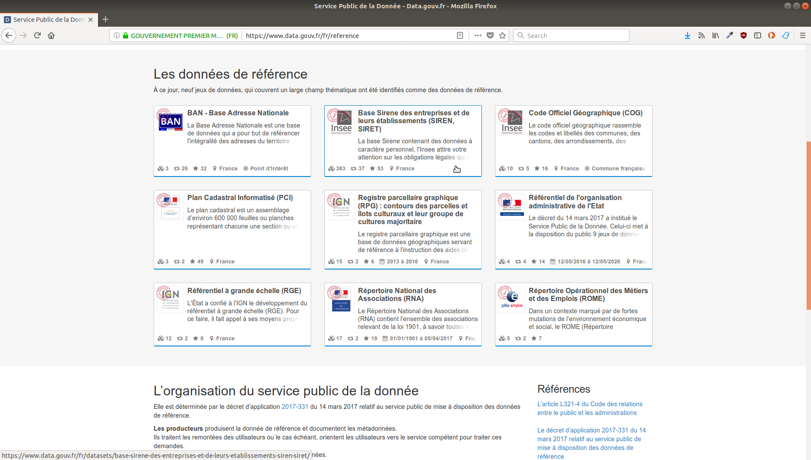

Paul-Antoine Chevalier

7 octobre 2018 : Obligation de diffuser les données dans un standard ouvert et aisément réutilisable les bases de données mises à jour de façon régulière et les données, mises à jour de façon régulière, présentant un intérêt économique, social, sanitaire ou environnemental.